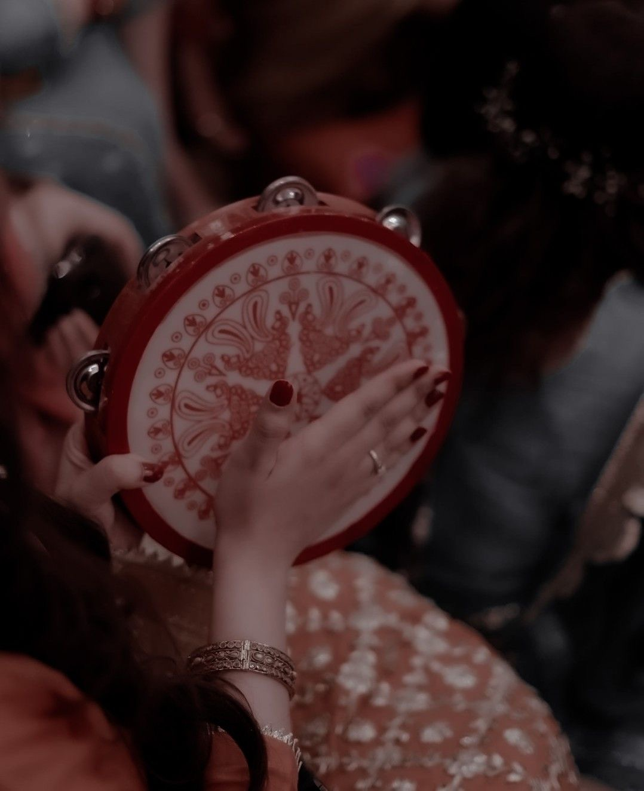

The music of Afghanistan comprises many varieties of classical music, folk music, and modern popular music. Afghanistan has a rich musical heritage and features a mix of Persian melodies, Indian compositional principles, and sounds from ethnic groups such as the Pashtuns, Tajiks and Hazaras. Instruments used range from Indian tablas to long-necked lutes. Instruments used range from Indian tablas to long-necked lutes. Afghanistan's classical music is closely related to Hindustani classical music while sourcing much of its lyrics directly from classical Persian poetry such as Mawlana Balkhi (Rumi) and the Iranian tradition indigenous to central Asia. Lyrics throughout most of Afghanistan are typically in Dari (Persian) and Pashto. The multi-ethnic city of Kabul has long been the regional cultural capital, but outsiders have tended to focus on the city of Herat, which is home to traditions more closely related to Iranian music than in the rest of the country.
Musical Instruments |
Musical Instruments |
Musical Instruments |
Rubab_ The rubab is a common lute-like instrument in Afghanistan, and is a forerunner of the Indian sarod. The rubab is sometimes considered the national instrument of Afghanistan, and is called the "lion of instruments"; one reviewer claims it sounds like "a Middle Eastern predecessor to the blues that popped up in the Piedmont 100 years ago".
Dambura_ The dombura, dambura or dambora is a popular folk instrument among Hazaras, Uzbeks, Turkmens and Tajiks. The dombura is played with much banging and scratching on the instrument to help give a percussive sound. The two strings are made of nylon (in modern times) or gut. They cross a short bridge to a pin at the other end of the body.
Ghichak_ Ghichak is a string instrument made by the Hazaras and Tajiks of Afghanistan. appears in 10th-century manuscripts, which indicate that the bridge (harrak) was made of almond shells. The ghidjak as depicted in 15th-century Persian miniatures resembles the modern instrument in its construction.
Tanbor |
Daira |
Drum(Tubla) |
Flute(Tolah) |
Tanbor |

Daira |
Drum(Tubla) |
Flute(Tolah) |
The following is a list of classical Afghan musicians who have been honored as an ustad.